How To Keep Your Bicycle Looking Smug!
-
Regular Cleaning
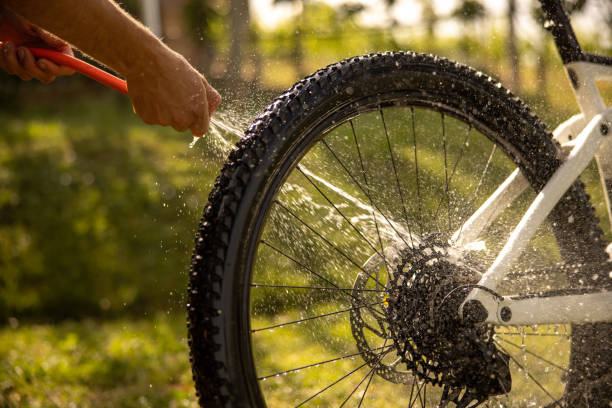Make time to give your beloved bicycle some spa time! Clean your bike regularly to remove dirt, grime, and debris preferably after every ride (10 - 15mins should do). Make sure to remove all that mud, dust and junk that's been clinging to your bike like a koala to a eucalyptus tree.
To protect the paint on your bike, use a mild detergent and a gentle brush or a soft cloth to wipe. Remember, you're not cleaning your house-pot or a race-car so keep things mild and soft. Don't scrub it like you're trying to erase your ex's number from your phone.
-
Inspect Your Tires
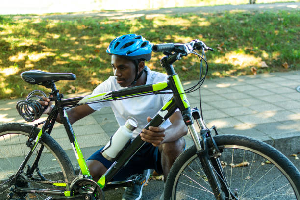Your bikes are your bike's precious feet and are always in contact with the ground. Ideally you should inspect your bike-tires before you hop on your bike in the morning. A quick check of 5-10 seconds should do.
Tires generally will gradually lose air over time, so inflate them if they're a bit deflated, especially if it's been a while since you have been on your bike.
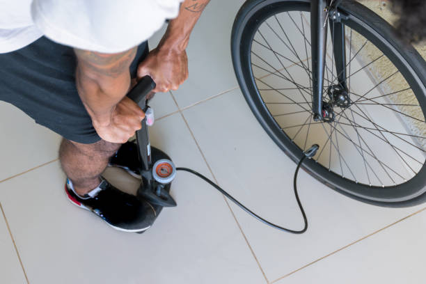Also, examine your tires for any signs of wear and tear, sometimes you might catch a pin (or some other sharp object) that your tire has picked up during the previous ride. Remove them before they can go in and puncture your tube. Routine inspections of your tire will more often than not avoid any hidden surprises when you're out for a spin.
If you are interested in reading more, we have taken the time to write an in-depth article about tire maintenance here.
-
Lubricate Your Chain
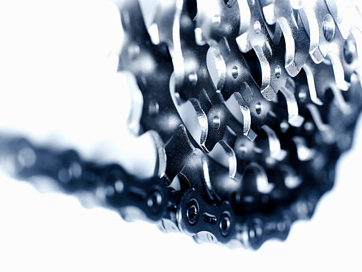Use lubricants to keep your drivetrain running smoothly. Your drivetrain is your chain, your cassette, and your chainrings. They've been working hard, so treat 'em like royalty.
Your bike will thank you, and who knows, it might just move a little faster as there's now less friction. One tip though, do not use too much lubricant and make sure to wipe off excess lubricant to prevent attracting dirt.
Too much lubricant on your chain will transform it into a sand magnet.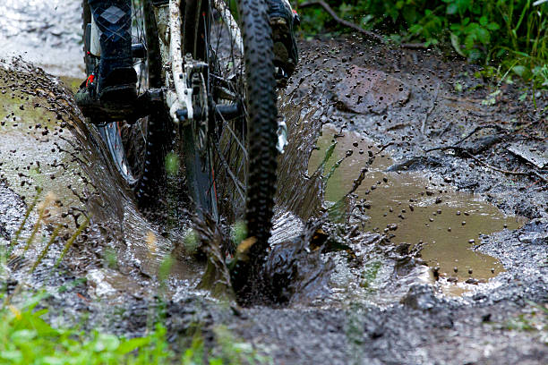 -
Brake Maintenance
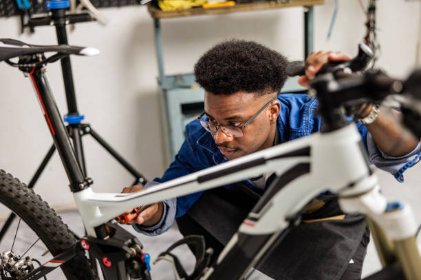Inspect brake pads for wear and replace them if they are worn down. Basically if you can see the metal inside your brake pads it means they have seen more action than a superhero in a blockbuster movie. Have mercy on your rim and change worn brake pads.
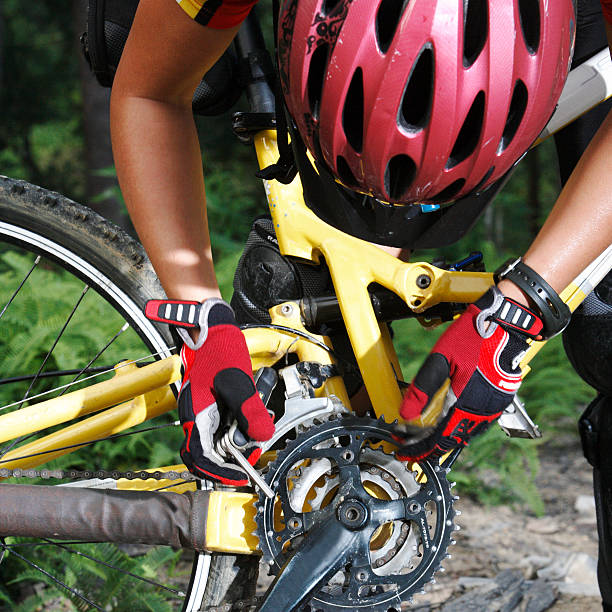Check your brake and your brake cables, if they are loose, your brake will feel weaker and will not stop as effectively. If they are too tight, your brake will feel super strong and might be harder to brake smoothly. Essentially, you want your brake cable tension to be just right, not too tight, not too loose, so your brakes perform normally. Safety always!
-
Check Gears
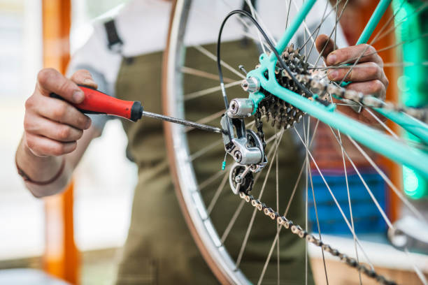If you own a bike with gear, you likely already know how important they can be. Gears keep you chugging along in all terrains and generally make life easier on your bike.
Make sure your gears are shifting well
All Your Bike Gears Should Be Working and You Should be Able To Select All of Them From Any Gear!!
If they're acting more like a robot with a glitch, it's time for a little tune-up as they might need adjustment. Adjust your cables and limit screws, so your derailleur (gear selector) works like that of Alaphilippe's.If after adjusting things still are not working well it might be time to look at your chain, gear cogs or the gear itself. If any of these look like they've been through more revolutions than a hamster wheel.... with visible wear, it's probably time to part ways.
For reference, your cassette should look more like this:
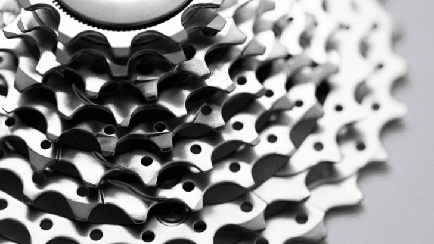And not like this:
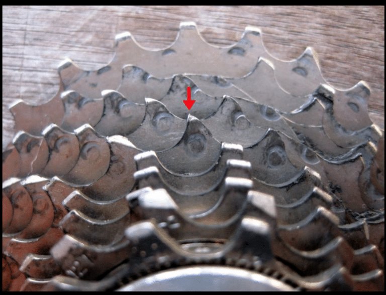In summary, your gear tooth should look more of wide-teeth, even and long, rather than shorter and pointed or jagged and uneven.
You should be able to run your fingers through them lightly without a cut.Clean your gears, remove mud, dirt and sand and learn to adjust your derailleur so your gear can work properly. Afterall, there's no point having a geared bike if they're not working properly.
-
Wheel Truing
Check the true of your wheels. if you have hit something (like a porthole at speed) or you took an unscheduled flight off your bike (a.k.a you crashed) there is a chance your wheel is no longer 'perfectly round' and this can cause performace issues.
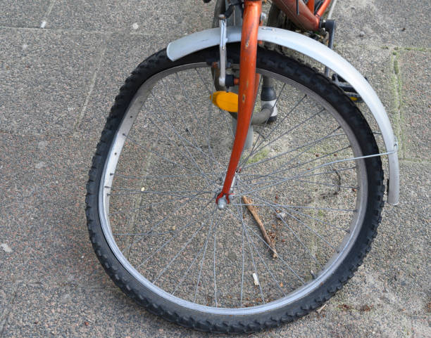If your wheels look like they are dancing more than they're rolling, it's time for some intervention. You might need a spoke wrench to true them up, or simply employ the services of a bike mechanic to get them straight.
-
Frame Inspection
Regularly inspect the frame for cracks or other damage. A quick look at the bike frame should do. Especially true for carbon and aluminiun frames! If you spot any suspicious cracks, dents, or signs of distress, don't just ignore or give it a band-aid and hope for the best.
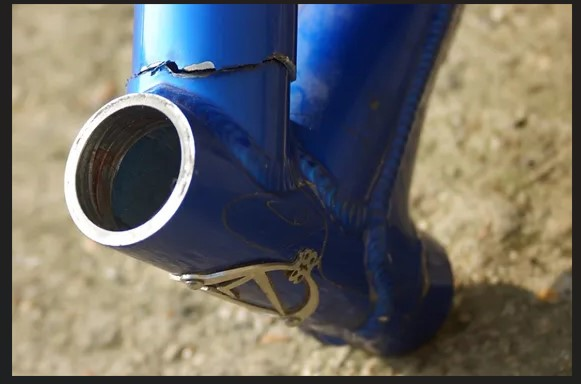Carbon frames are light and fast, but that property often makes them prone, they can easily crack and be there just waiting to fail. A frame failure has consequences I am sure you do not want to hear at this time..
If you do detect any problems, don't sweat it. Call your mechanic plug to check it out. If you cant, walk your bike and roll over to your nearest bike shop. If you have to ride it..well.. Ride carefully when using a bike with visible frame weaknesses. Your bike mechanic should know exactly what to do to get your ride back in tip-top shape.
Here you will learn how to maintain your bicycle to make sure your bike stays in tiptop shape and doesn't give you any funny surprises along the way.
Regular maintenance can extend the life of your bicycle and ensure a safe and enjoyable riding experience. The frequency of these tasks may vary depending on your riding conditions and how often you use your bike, so use your best judgment. We recommend that you take a few (say 3 to 5) minutes to check your bike before you roll out.